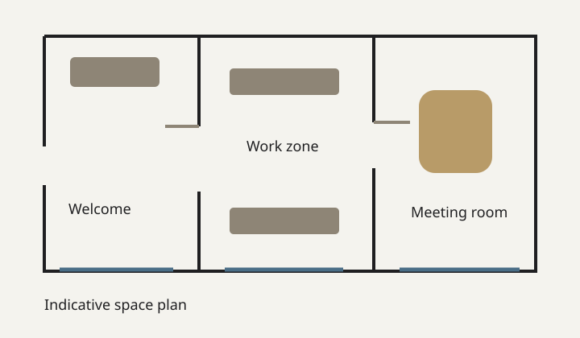

Landlords & Agents
Show prospective occupiers what the space could become.
We help landlords and agents assess vacant space, explore layouts and refurbishment options, and explain what could be delivered before a lease is agreed.

What we look at on a building walk
We review the base build finishes and landlord fit-out requirements before proposing changes. An indicative plan and finishes schedule can show how door frames, flooring, wall finishes and lighting work together, and flag which changes may need landlord approval.
What could fit here?
Walk the space with the property team or prospective occupiers and test potential layouts against their needs.
What would need changing?
Consider targeted improvements or deeper refurbishment, with concept and technical design input and indicative costs.
What could affect the programme?
Identify building constraints, landlord requirements and the decisions needed before setting a delivery programme.